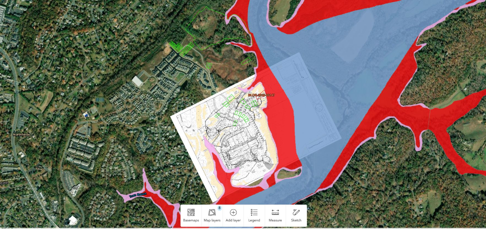
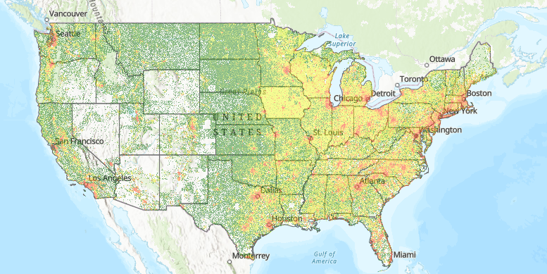
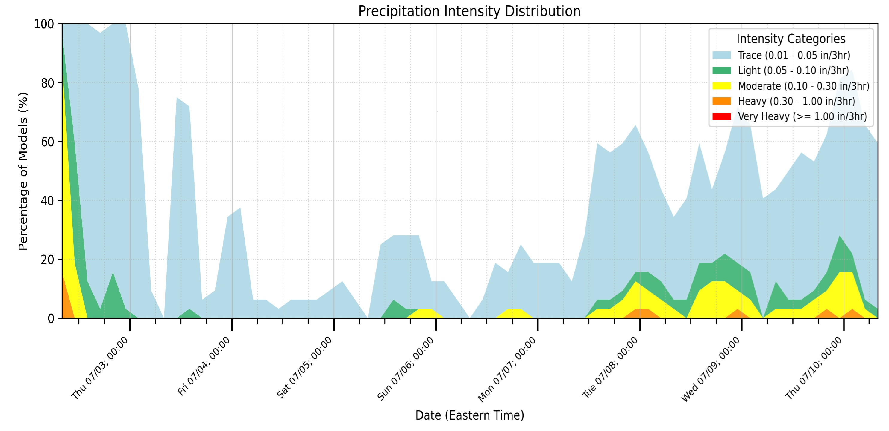
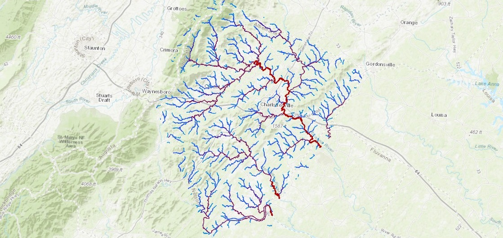

A showcase of some recent GIS and data science products I've created

Albemarle County recently transitioned to using Civic Access and “EP&L” to manage engineering permit applications. Stavros built this GIS application and associated Python workflows to assist with tracking, managing, and completing his engineering reviews. This map updates automatically each morning to show reviews assigned to Stavros against key GIS layers. It also shows related approved engineering reviews and enables users to visualize reviews against georeferenced plansets and create elevation profiles against LiDAR data. Click here to view a screenshare video that walks you through this project.

Average parcel sizes are important in prospecting for land development projects. I built a raster image representing average parcel size throughout most of the US by using Python and PostgreSQL to analyze over 150 million publicly available parcel centroid points. Click here to view a screenshare video that walks you through this project.

Enter a US airport name to see the full range of equally probable 8 day temperature and precipitation forecasts predicted by the GEFS forecast model. Click here to view a screenshare video that walks you through this project.

Understanding overland flow pathways and their drainage areas is useful in flood risk assessment, new development permitting, and identifying sources and destination for pollution. I built this web app in order to assist with these goals. Click here to view a screenshare video that walks you through this project.